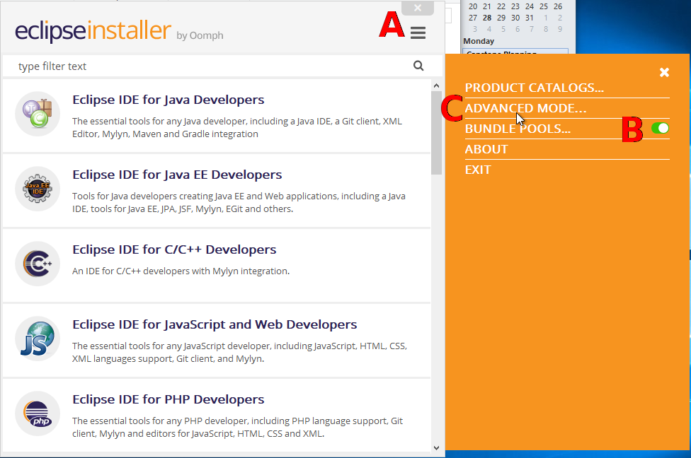
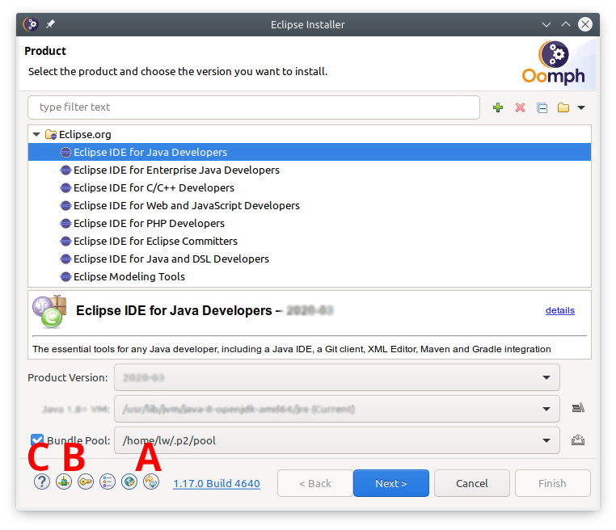
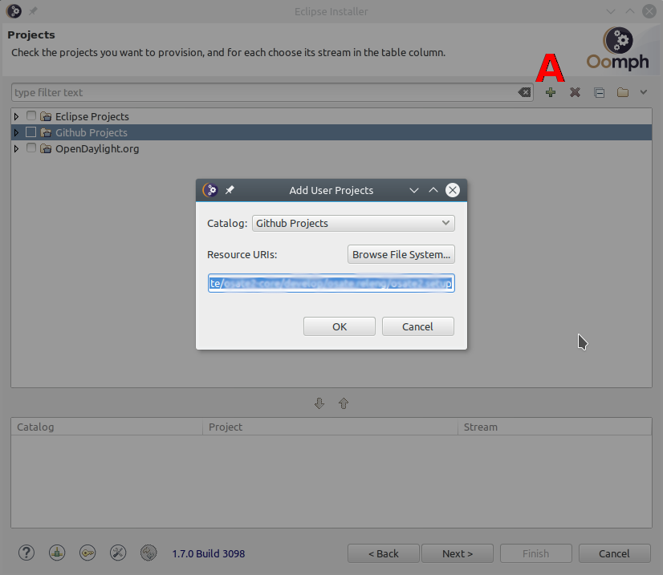
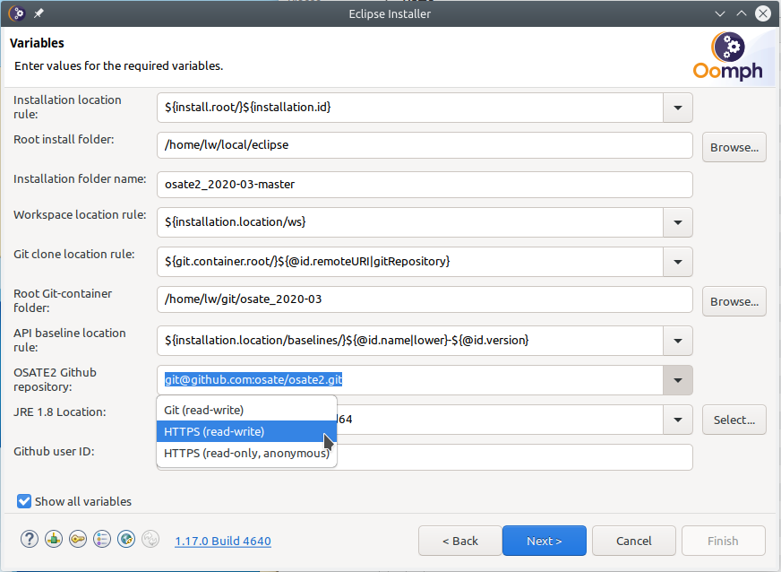
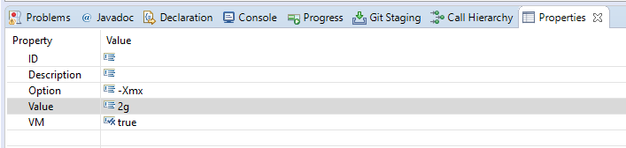

Setting up an OSATE development environment¶
The recommended way to set up a development environment uses the Eclipse Installer.
Note: It is no longer necessary to install Java separately.
1. Download the installer¶
The Eclipse Installer can be downloaded from the Eclipse Web site. Follow this link to download the installer for your platform.
On macOS and Linux the installer is a compressed archive. Extract it to a directory of your choice.
The installer for Windows is a self-extracting archive. When running the executable you can choose to keep the extracted installer and select an installation directory.
Note: On Windows the initial extraction is into a temporary directory. If your computer is subject to a restrictive security policy that does not allow execution of arbitrary programs from that directory you can download the windows installer as a zip file from here and extract it to a directory that allows program execution.
2. Run the installer¶

Open the menu (A), bundle pools should be on (B), and switch to advanced mode (C)
3. Select the Eclipse platform¶

On first use update the installer (A)
If necessary, configure proxy settings, and optionally enter ssh credentials (B). Use the help (C) for more detailed information on these steps.
Select Eclipse IDE for Java Developers as the base product to install, and select 2021-03 as the product version. DO NOT USE Latest Release (2021-03).
Select the JRE 11.0.2 … entry as the Java 11+ VM.
4. Add the OSATE setup file¶

Add a user project by clicking on the + icon (A).
Select the catalog Github Projects and enter the following URL as the Resource URI:
https://raw.githubusercontent.com/osate/osate2/master/setup/osate2_2021-03.setup
Check the box next to the added OSATE2 Development entry in the tree under Github Projects/
5. Set required variables¶

Check Show all variables near the bottom of the dialog. Without this, only variables that do not have a value will be displayed. Oomph stores variable values between invocations, so nothing would be shown after the first run.
The first group of variables determines the directory for the new Eclipse installation. In Installation location rule you can choose between (a) a root directory and a subdirectory within that root directory and (b) a full path to the installation directory. Depending on your choice you will need to fill in the installation path and directory name.
The next group determines the location of the workspace. Do not reuse an existing workspace as that will likely lead to problems.
The Git clone location rule determines how the path to the osate2 git repository clone is constructed. The osate2 git repository can be cloned in a directory in the installation location, workspace location, or elsewhere. Depending on the location a new field will be shown to enter a directory.
The API baseline location rule determines how the path to store API baseline files is constructed. The API baseline(s) can be stored in a directory in the installation location, workspace location, or elsewhere. Depending on the location a new field will be shown to enter a directory. Do not store API baseline files in a local git repository.
Finally, choose how to access the git repositories. The default choice uses ssh access and requires ssh credentials (click the key icon at the bottom to set this up), and your public key must be uploaded to GitHub. The HTTPS (read-write) option uses your GitHub username and password. When you choose https, a variable for the user name will show up. Replace the default anonymous with your GitHub user name.
6. Install Eclipse¶
The next screen shows the installation steps that will be executed. Click Finish to download Eclipse and install it to the selected location. When run for the first time, it will download features and plugins into the bundle pool. The bundle pool is shared among Eclipse installations such that subsequent installations are much faster.
7. Get OSATE sources¶
Upon first start Eclipse executes additional setup tasks to set preferences, clone git repositories if needed, import projects, and organize projects into working sets.
The OSATE2 setup file sets the following preferences:
The Java perspective is set as the default and Eclipse is configured to start with this perspective.
The default file encoding is set to UTF-8.
A source cleanup profile Osate is created and enabled for the workspace.
Java formatter profiles Osate is created and enabled for the workspace.
Java code cleanup actions on save are configured and enabled for the workspace.
An Xtend formatter profile Osate is created and enabled for the workspace.
Cloning the git repositories takes some time. Progress can be viewed in a dialog. To show the progress dialog, click on the animated icon the Eclipse status bar.
8. Install the JavaFX SDK¶
The JavaFX must be installed manually.
Download the SDK for your development platform from the JavaFX website. For example: “JavaFX Windows SDK”.
Extract the SDK to your preferred path.
Configure the development enivornment with the path to the SDK.
Open Eclipse preferences: Windows -> Preferences
Select JavaFX
Set JavaFX 11+ SDK to the lib folder of the SDK.
9. Updating the development environment¶
Ideally the development environment is completely managed using the setup file. This implies that additional plugins or git repositories should not be added manually. Instead, the setup file should be updated. All developers can then update the Eclipse installation by re-executing the setup process. This happens every time Eclipse is started (unless disabled in the preferences) or can be done manually via Help -> Perform Setup Tasks …
Please report issues with the setup using the osate2 issue tracker on GitHub.
Q & A / Troubleshooting¶
The heap size is set to 4GB. How do I change that to 2GB?¶
You can edit the user setup to override the setting for all Eclipse installations. Follow these steps in Eclipse:
Open the user setup: Navigate -> Open Setup -> User
Add an Eclipse Ini task: In the setup editor right click on User and select New Child -> Eclipse Ini
Edit the task properties: Right click on the new Eclipse Ini task and select Show Properties View
Set the maximum heap size value: In the Properties view
Set Option to “-Xmx” (without the quotes)
Set Value “2g” or “2048m” (without the quotes) to set the heap size to 2GB
Set VM to “true”.

Save the user setup
Execute the setup: Help -> Perform Setup Tasks…
You can also edit the installation setup to establish a maximum heap size just for this Eclipse installation.
Can I add the OSATE2 project setup to an existing workspace?¶
Yes, a project setup can be imported into a workspace: File -> Import… -> Oomph -> Projects into workspace
You can also use the import to add additional project setups to a workspace.
I want to use the Eclipse installation with a new workspace. Can I do that?¶
No problem. Switch to the new workspace location and import the OSATE2 project setup.
Alternatively, you can create a new Eclipse installation for each new workspace. When using a bundle pool, an Eclipse installation is comparatively lightweight, and quick to set up.
I have installed a feature in my Eclipse installation, but it’s not available when I start OSATE using a launch configuration.¶
Installed features must be part of the target platform to be available to a runtime workbench. The OSATE2 setup uses a target platform Modular Target. To add to this target create a Targlet in your setup. See osate2.setup for an example.
How can I add a feature to the OSATE2 development setup?¶
Edit the OSATE2 setup (add a P2 director task and/or a targlet) and submit a pull request. DO NOT push a modified osate2.setup file to the develop branch on GitHub!
How can I prevent NoClassDefFoundError exceptions from being thrown when opening the graphical editor?¶
Add “-Dosgi.framework.extensions=org.eclipse.fx.osgi” (without the quotes) to the VM arguments of your launch configuration.
Where can I find documentation about Oomph setups?¶
On the Eclipse wiki: Eclipse Oomph Authoring
There are too many steps, is there a faster way?¶
If you have already installed the Eclipse Installer on your computer try this link.